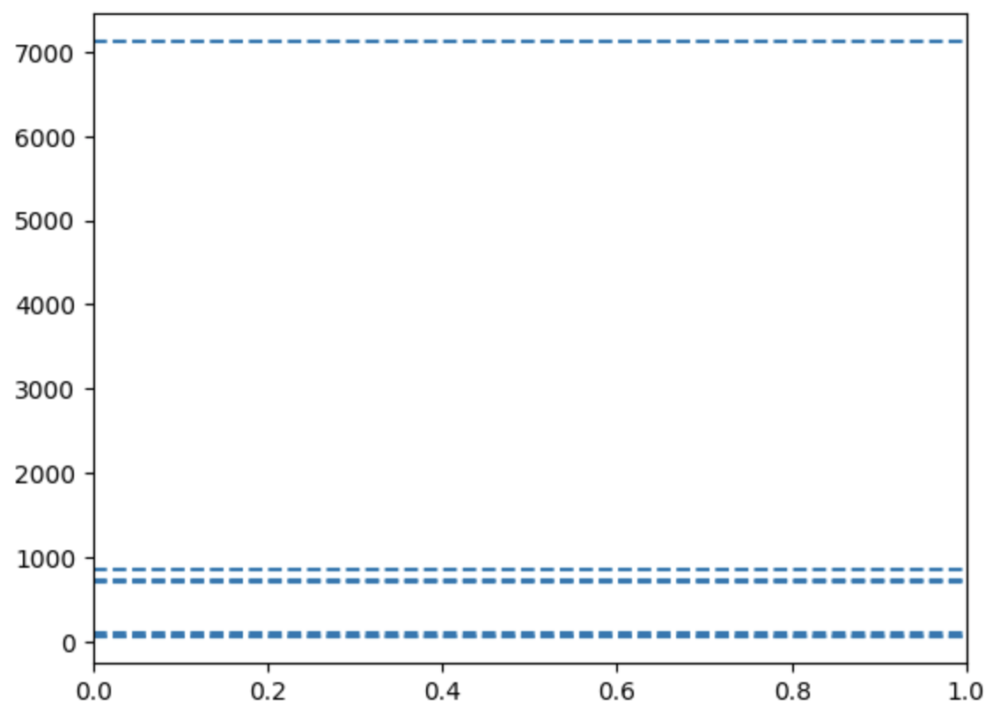

Flank Method
Introduction
The members of the garnet group have a large variety of chemical compositions with the general formula A2+3B3+2(SiO4)3. A is a distorted octahedral site and B a normal octahedral site. Here we focus on the two garnets almandine and andradite, which differ in their chemical composition and the valence state of Fe. Almandine has the chemical formula Fe2+3Al2(SiO4)3, with Fe as Fe2+ in the distorted octahedral A site, and andradite has the chemical formula Ca3Fe3+2(SiO4)3, with Fe as Fe3+ in the octahedral B site. There is a general, large immicibility gap between almandine and andradite, however, almandine can have up to ~10% Fe3+ and andradite up to ~10% Fe2+. This amount is expressed in the atomic ratio Fe3+/FeT, with FeT meaning total Fe. The amount of Fe3+/FeT can be directly used to calcuate the amount of free oxygen, i.e., the oxygen fugacity (\(\rightarrow\) fO2) while the garnet formed.
Almandine: Fe2+3Al2(SiO4)3, up to ~10% Fe3+/FeT
Andradite: Ca3Fe3+2(SiO4)3, down to ~90% Fe3+/FeT
The amount of Fe3+/FeT is used to calculate the fO2.
Principle
The energies of the FeL\(\alpha\) and FeL\(\beta\) lines are close together at 0.7049 and 0.7183 keV, respectively. These energies translate to analyser crystal positions, i.e., L-values on a JEOL microprobe of 191.218 and 187.631 mm. The relative intensities of the lines are 80 and 20, respectively, on a normalised scale of 100. Figure 1 shows the FeLa and FeLb peaks of an almandine spectra. The vertical lines indicate the tabulated values for FeLa and FeLb. A single tabulated and measured values need not to coincide, as this depends on the mechanical build. The distance of FeLa and FeLb, on the other, should be the same between the tabulated and measured peaks. However, this is not the case as already visible in Figure 1 by the naked eye.

This means, at least one peak is not where it theoretically should be. The reason is the crystal field in which an atom, in this case the Fe atom, sits. This crystal fields slightly changes the electron energy levels around the Fe atom, and therewith the differencens between the electron energy levels (Figure 2).

These differences define the energies of the characteristic X-rays of the Lb and La lines. This effect is called chemical peak shift, and is the fundamental effect, upon which the flank method builds. :red[And finally, this effect also changes the relative intensities of the Lb and La lines.]
Now, the Fe2+ in pure almandine occupies the distorted octahedral site, while the Fe3+ in pure andradite occupies the normal octahedral site. These two different crystal fields result in sligthly different energy levels, and therewith in different energies of the characteristic La and Lb lines and different peak intensities. Hence, almandine and andradite are discriminated by the location and height of their La and Lb peaks. The goal is, however, not to simply discriminate two minerals, Further, most garnets in mantle and metamorphic rocks are solid solutions between almandine and pyrope with the general formula (Mg,Fe)3Al2(SiO4)3. These garnets contain, as outlined above, small amounts of Fe3+, which is a function of the ambient fO2 during garnet formation. But even small variations of Fe3+ shift the positions and increase/decrease the intensities of the La and Lb peaks. We cannot sensibly quantify an entire spectrum such as the one shown in Figure 1, and obtaing such spectra would cost way too much time. We therefore position the analyser crystal at a certain L-value, and measure the counts at this position in a standard and then in the sample. Because the peak shifted and in- or decreased its intensity depending on the sample’s Fe3+/FeT ratio, the counts in the sample will be either lower or higher than in the standard. As these count differences will be low, it is important to move the analyser crystal to a position with maximum count differences between standard and sample. As is seen from the schematic Figure 3, this position is at around the middle of a peak’s flank (now guess how this method earned its name). Each measurement position results in another count difference between the standard and sample peak. Note that peak means somewhere on the peak, not the peak maximum – which would not possible for both peaks at the same time when the measurement position is fixed, but the peak maximum of the samples is shifted from the peak maximum of the standard.

This position can be determined using a difference spectra … Figure 4
Not only one position, but two and then the ratio of these positions.

Almandine and andradite have different chemical peak shifts. The extent of the chemical peak shift is a function of Fe3+/FeT.
Advantages & Disadvantages
Alternatives
Alternative methods to determine Fe3+/FeT are Mössbauer spectroscopy or XANES (X-ray absorption near edge structure). Mössbauer spectroscopy has a low resolution of typically xx µm, while XANES requires a synchrotron and is therefore costly and laborious. These methods can, however, determine Fe3+/FeT in bascially all types of material.